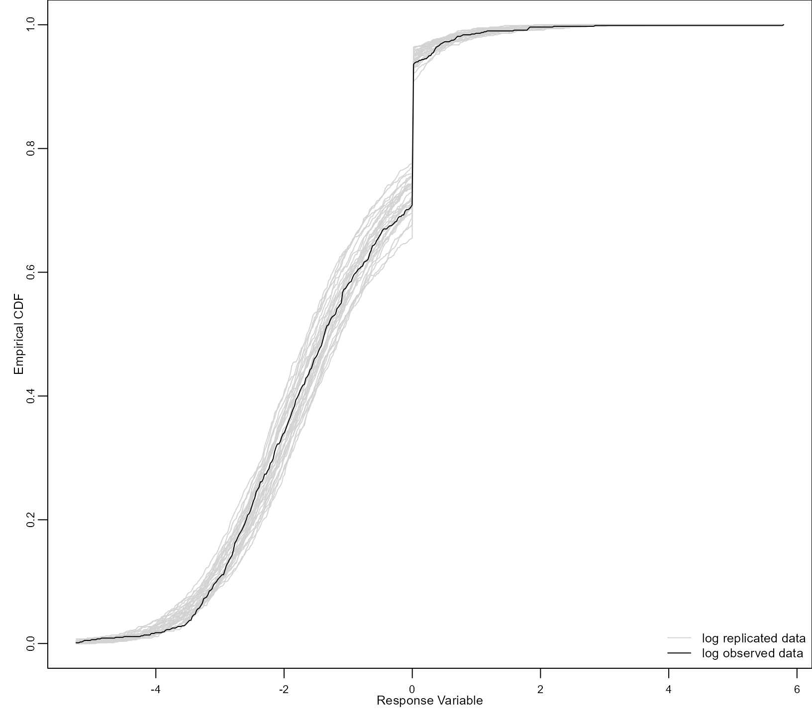

vignettes/ZeroInflated_and_TwoPart_Models.Rmd
ZeroInflated_and_TwoPart_Models.RmdFunction mixed_model() of GLMMadaptive
can also be used to fit zero-inflated and two-part mixed effects models.
For both types of models, a suitable family object needs to
be specified as outlined in
vignette("Custom_Models", package = "GLMMadaptive"), and
also arguments zi_fixed and zi_random of
mixed_model() come into play. In these arguments, the user
can specify the fixed and random effects formulas of the
logistic regression for the zero-part of the distribution of the
outcome. We should note that the user has the option to leave
zi_random set to NULL, in which case for the
zero-part we have a logistic regression with only fixed effects and no
random effects.
In addition, in the specification of the family object,
and in order to better facilitate the internal computations, the user
may specify the function score_eta_zi_fun that calculates
the derivative of the log probability density function or the log
probability mass function with respect to eta_zi that
denotes the linear predictor of the logistic regression for the zero
part. Here we provide three examples to illustrate how such models can
be fitted.
We start our illustrations by showing how we can fit a zero-inflated
Poisson mixed effects model. The specification of the required
family object is already available in the package as the
object returned by zi.poisson(). Currently, only the
log link is allowed. First, we simulate longitudinal data from a
zero-inflated negative binomial distribution:
set.seed(1234)
n <- 100 # number of subjects
K <- 8 # number of measurements per subject
t_max <- 5 # maximum follow-up time
# we construct a data frame with the design:
# everyone has a baseline measurement, and then measurements at random follow-up times
DF <- data.frame(id = rep(seq_len(n), each = K),
time = c(replicate(n, c(0, sort(runif(K - 1, 0, t_max))))),
sex = rep(gl(2, n/2, labels = c("male", "female")), each = K))
# design matrices for the fixed and random effects non-zero part
X <- model.matrix(~ sex * time, data = DF)
Z <- model.matrix(~ 1, data = DF)
# design matrices for the fixed and random effects zero part
X_zi <- model.matrix(~ sex, data = DF)
Z_zi <- model.matrix(~ 1, data = DF)
betas <- c(1.5, 0.05, 0.05, -0.03) # fixed effects coefficients non-zero part
shape <- 2 # shape/size parameter of the negative binomial distribution
gammas <- c(-1.5, 0.5) # fixed effects coefficients zero part
D11 <- 0.5 # variance of random intercepts non-zero part
D22 <- 0.4 # variance of random intercepts zero part
# we simulate random effects
b <- cbind(rnorm(n, sd = sqrt(D11)), rnorm(n, sd = sqrt(D22)))
# linear predictor non-zero part
eta_y <- as.vector(X %*% betas + rowSums(Z * b[DF$id, 1, drop = FALSE]))
# linear predictor zero part
eta_zi <- as.vector(X_zi %*% gammas + rowSums(Z_zi * b[DF$id, 2, drop = FALSE]))
# we simulate negative binomial longitudinal data
DF$y <- rnbinom(n * K, size = shape, mu = exp(eta_y))
# we set the extra zeros
DF$y[as.logical(rbinom(n * K, size = 1, prob = plogis(eta_zi)))] <- 0A zero-inflated Poisson mixed model with only fixed effects in the
zero part is fitted with the following call to
mixed_model():
fm1 <- mixed_model(y ~ sex * time, random = ~ 1 | id, data = DF,
family = zi.poisson(), zi_fixed = ~ sex)
fm1
#>
#> Call:
#> mixed_model(fixed = y ~ sex * time, random = ~1 | id, data = DF,
#> family = zi.poisson(), zi_fixed = ~sex)
#>
#>
#> Model:
#> family: zero-inflated poisson
#> link: log
#>
#> Random effects covariance matrix:
#> StdDev
#> (Intercept) 0.8272898
#>
#> Fixed effects:
#> (Intercept) sexfemale time sexfemale:time
#> 1.5275644687 0.0173647260 -0.0040365383 0.0004326841
#>
#> Zero-part coefficients:
#> (Intercept) sexfemale
#> -1.210597 0.498611
#>
#> log-Lik: -2223.937As noted above, only the log link is currently available for the
non-zero part and the logit link for the zero part. Hence, the estimated
fixed effects for the two parts are interpreted accordingly. We extend
fm1 by allowing also for random intercepts in the zero
part. We should note that by default the random intercept of the
non-zero part is correlated with the random intercept from the zero
part:
fm2 <- update(fm1, zi_random = ~ 1 | id)
fm2
#>
#> Call:
#> mixed_model(fixed = y ~ sex * time, random = ~1 | id, data = DF,
#> family = zi.poisson(), zi_fixed = ~sex, zi_random = ~1 |
#> id)
#>
#>
#> Model:
#> family: zero-inflated poisson
#> link: log
#>
#> Random effects covariance matrix:
#> StdDev Corr
#> (Intercept) 0.7394
#> zi_(Intercept) 0.6917 -0.6550
#>
#> Fixed effects:
#> (Intercept) sexfemale time sexfemale:time
#> 1.5891884685 -0.0085650817 -0.0030156086 0.0002487272
#>
#> Zero-part coefficients:
#> (Intercept) sexfemale
#> -1.112309 0.427672
#>
#> log-Lik: -2214.277We test if we need the extra random effect using a likelihood ratio test:
anova(fm1, fm2)
#>
#> AIC BIC log.Lik LRT df p.value
#> fm1 4461.87 4480.11 -2223.94
#> fm2 4446.55 4470.00 -2214.28 19.32 2 1e-04The results suggest that the extra random effect improves the fit of the model.
We continue with the same data, but we now take into account the
potential over-dispersion in the data using a zero-inflated negative
binomial model. To fit this mixed model we use an almost identical
syntax to what we just did above - the only difference is that we now
specify as family the zi.negative.binomial() object:
gm1 <- mixed_model(y ~ sex * time, random = ~ 1 | id, data = DF,
family = zi.negative.binomial(), zi_fixed = ~ sex)
gm1
#>
#> Call:
#> mixed_model(fixed = y ~ sex * time, random = ~1 | id, data = DF,
#> family = zi.negative.binomial(), zi_fixed = ~sex)
#>
#>
#> Model:
#> family: zero-inflated negative binomial
#> link: log
#>
#> Random effects covariance matrix:
#> StdDev
#> (Intercept) 0.8293515
#>
#> Fixed effects:
#> (Intercept) sexfemale time sexfemale:time
#> 1.467900626 0.029416703 0.003005305 -0.006440699
#>
#> Zero-part coefficients:
#> (Intercept) sexfemale
#> -1.5554713 0.5914944
#>
#> dispersion parameter:
#> 2.227075
#>
#> log-Lik: -1958.746Similarly to fm1, in gm1 we specified only
fixed effects for the logistic regression for the zero part. We now
compare this model with the zero-inflated Poisson model that allowed for
a random intercept in the zero part. The comparison can be done with the
anova() method; because the two models are not nested, we
set test = FALSE in the call to anova(),
i.e.:
anova(gm1, fm2, test = FALSE)
#>
#> AIC BIC log.Lik df
#> gm1 3933.49 3954.33 -1958.75
#> fm2 4446.55 4470.00 -2214.28 1We observe that accounting for the over-dispersion seems to better improve the fit than including the random intercepts term in the zero part.
To further illustrate the flexibility provided by GLMMadaptive in allowing users to specify their own family objects with a specific log density function, we consider the setting of multivariate semi-continuous data. That is, continuous data with excess zeros. In the literature the class of two-part / hurdle mixed models has been proposed to analyze such data. These models specify a logistic regression for the dichotomous indicator that the outcome is zero or not, and a standard linear mixed model for the logarithmic transformation of the non-zero responses.
We start again by simulating some longitudinal data from this model:
set.seed(1234)
n <- 100 # number of subjects
K <- 8 # number of measurements per subject
t_max <- 5 # maximum follow-up time
# we construct a data frame with the design:
# everyone has a baseline measurement, and then measurements at random follow-up times
DF <- data.frame(id = rep(seq_len(n), each = K),
time = c(replicate(n, c(0, sort(runif(K - 1, 0, t_max))))),
sex = rep(gl(2, n/2, labels = c("male", "female")), each = K))
# design matrices for the fixed and random effects non-zero part
X <- model.matrix(~ sex * time, data = DF)
Z <- model.matrix(~ time, data = DF)
# design matrices for the fixed and random effects zero part
X_zi <- model.matrix(~ sex, data = DF)
Z_zi <- model.matrix(~ 1, data = DF)
betas <- c(-2.13, -0.25, 0.24, -0.05) # fixed effects coefficients non-zero part
sigma <- 0.5 # standard deviation error terms non-zero part
gammas <- c(-1.5, 0.5) # fixed effects coefficients zero part
D11 <- 0.5 # variance of random intercepts non-zero part
D22 <- 0.1 # variance of random slopes non-zero part
D33 <- 0.4 # variance of random intercepts zero part
# we simulate random effects
b <- cbind(rnorm(n, sd = sqrt(D11)), rnorm(n, sd = sqrt(D22)), rnorm(n, sd = sqrt(D33)))
# linear predictor non-zero part
eta_y <- as.vector(X %*% betas + rowSums(Z * b[DF$id, 1:2, drop = FALSE]))
# linear predictor zero part
eta_zi <- as.vector(X_zi %*% gammas + rowSums(Z_zi * b[DF$id, 3, drop = FALSE]))
# we simulate log-normal longitudinal data
DF$y <- exp(rnorm(n * K, mean = eta_y, sd = sigma))
# we set the zeros from the logistic regression
DF$y[as.logical(rbinom(n * K, size = 1, prob = plogis(eta_zi)))] <- 0To fit the two-part mixed model for log-normal data we can use the
already build-in hurdle.lognormal() family object. However,
just as an illustration, and to show that users can define their own
family objects to be used in mixed_model(), we explain how
exactly hurdle.lognormal() is specified. To define the
family object: The minimal requirement is to specify the
log_dens component and the link function; however, as also
explained in the Custom
Models vignette, the internal calculations will be faster and more
stable if the user also specifies the score vector for the linear
predictor of the non-zero part (function score_eta_fun()),
the derivative of the log density with respect to phis
(function score_phis_fun()), and because we have a model
with a zero part, also the derivative of the log density with respect to
the linear predictor of the zero part (function
score_eta_zi_fun()). Finally, for being able to simulate
from the model using the simulate() method, the function
simulate() within the family object can also be specified.
Hence, the family object for the two-part model is defined as:
hurdle.lognormal <- function () {
stats <- make.link("identity")
log_dens <- function (y, eta, mu_fun, phis, eta_zi) {
sigma <- exp(phis)
# binary indicator for y > 0
ind <- y > 0
# non-zero part
eta <- as.matrix(eta)
eta_zi <- as.matrix(eta_zi)
out <- eta
out[ind, ] <- plogis(eta_zi[ind, ], lower.tail = FALSE, log.p = TRUE) +
dnorm(x = log(y[ind]), mean = eta[ind, ], sd = sigma, log = TRUE)
# zero part
out[!ind, ] <- plogis(eta_zi[!ind, ], log.p = TRUE)
attr(out, "mu_y") <- eta
out
}
score_eta_fun <- function (y, mu, phis, eta_zi) {
sigma <- exp(phis)
# binary indicator for y > 0
ind <- y > 0
# non-zero part
eta <- as.matrix(mu)
out <- eta
out[!ind, ] <- 0
out[ind, ] <- (log(y[ind]) - eta[ind, ]) / sigma^2
out
}
score_eta_zi_fun <- function (y, mu, phis, eta_zi) {
ind <- y > 0
probs <- plogis(as.matrix(eta_zi))
out <- 1 - probs
out[ind, ] <- - probs[ind, ]
out
}
score_phis_fun <- function (y, mu, phis, eta_zi) {
sigma <- exp(phis)
# binary indicator for y > 0
ind <- y > 0
# non-zero part
eta <- as.matrix(mu)
out <- eta
out[!ind, ] <- 0
out[ind, ] <- - 1 + (log(y[ind]) - eta[ind, ])^2 / sigma^2
out
}
simulate <- function (n, mu, phis, eta_zi) {
y <- rlnorm(n = n, meanlog = mu, sdlog = exp(phis))
y[as.logical(rbinom(n, 1, plogis(eta_zi)))] <- 0
y
}
structure(list(family = "two-part log-normal", link = stats$name,
linkfun = stats$linkfun, linkinv = stats$linkinv, log_dens = log_dens,
score_eta_fun = score_eta_fun, score_eta_zi_fun = score_eta_zi_fun,
score_phis_fun = score_phis_fun, simulate = simulate),
class = "family")
}Then to fit the model, we provide the user-defined family object in
the family argument of mixed_model(),
specifying also that we have one dispersion parameter in the family
(i.e., n_phis = 1), and that in the zero part we only
include fixed effects:
km1 <- mixed_model(y ~ sex * time, random = ~ 1 | id, data = DF,
family = hurdle.lognormal(), n_phis = 1,
zi_fixed = ~ sex)
km1
#>
#> Call:
#> mixed_model(fixed = y ~ sex * time, random = ~1 | id, data = DF,
#> family = hurdle.lognormal(), zi_fixed = ~sex, n_phis = 1)
#>
#>
#> Model:
#> family: two-part log-normal
#> link: identity
#>
#> Random effects covariance matrix:
#> StdDev
#> (Intercept) 0.9609426
#>
#> Fixed effects:
#> (Intercept) sexfemale time sexfemale:time
#> -2.08122468 -0.24046281 0.22303981 -0.05686286
#>
#> Zero-part coefficients:
#> (Intercept) sexfemale
#> -1.6034499 0.6713555
#>
#> phi parameters:
#> -0.3348787
#>
#> log-Lik: -1214.208The estimated standard deviation for the error terms is
exp(phis) = 0.7 We extend the model by allowing for a
random intercept in the zero-part, but using the || symbol
in the random argument we specify the covariance matrix of
the random effects is diagonal; hence, that the two random intercepts
terms are uncorrelated:
km2 <- update(km1, random = ~ 1 || id, zi_random = ~ 1 | id)
km2
#>
#> Call:
#> mixed_model(fixed = y ~ sex * time, random = ~1 || id, data = DF,
#> family = hurdle.lognormal(), zi_fixed = ~sex, zi_random = ~1 |
#> id, n_phis = 1)
#>
#>
#> Model:
#> family: two-part log-normal
#> link: identity
#>
#> Random effects covariance matrix:
#> StdDev
#> (Intercept) 0.9609
#> zi_(Intercept) 0.6043
#>
#> Fixed effects:
#> (Intercept) sexfemale time sexfemale:time
#> -2.0811898 -0.2405682 0.2230215 -0.0568855
#>
#> Zero-part coefficients:
#> (Intercept) sexfemale
#> -1.7160430 0.7096562
#>
#> phi parameters:
#> -0.3349759
#>
#> log-Lik: -1210.313For zero-inflated or hurdle models the marginal_coefs()
functions provides the marginalized coefficients corresponding the
average mixture response variable, i.e., \[(1
- \pi) \times E(Y),\] where \(\pi\) denotes the probability of being
zero, and \(Y\) the response random
variable for the non-zero part. For example, in the case of the hurdle
log-normal family, we get the marginalized coefficients for \((1 - \pi) \times E\{\log(Y)\}\), e.g.,
marginal_coefs(km2)
#> (Intercept) sexfemale time sexfemale:time
#> -1.7311 0.0626 0.1852 -0.0661Finally, we show how the simulate() method can be used
to perform a replication / posterior predictive check. In particular, in
the following code we compare the empirical distribution function
estimated in the observed data with estimates of the empirical
distribution function obtained from simulated/replicated data from the
model. In the call to simulate() below we also specify to
account for the variability in the maximum likelihood estimates by
setting acount_MLEs_var = TRUE:
par(mar = c(2.5, 2.5, 0, 0), mgp = c(1.1, 0.5, 0), cex.axis = 0.7, cex.lab = 0.8)
y <- DF$y
y[y > 0] <- log(y[y > 0])
x_vals <- seq(min(y), max(y), length.out = 500)
out <- simulate(km2, nsim = 30, acount_MLEs_var = TRUE)
ind <- out > sqrt(.Machine$double.eps)
out[ind] <- log(out[ind])
rep_y <- apply(out, 2, function (x, x_vals) ecdf(x)(x_vals), x_vals = x_vals)
matplot(x_vals, rep_y, type = "l", lty = 1, col = "lightgrey",
xlab = "Response Variable", ylab = "Empirical CDF")
lines(x_vals, ecdf(y)(x_vals))
legend("bottomright", c("log replicated data", "log observed data"), lty = 1,
col = c("lightgrey", "black"), bty = "n", cex = 0.8)
An alternative modeling framework to account for high percentages of
0 in count data is hurdle models. These models are similar to the
two-part model for semi-continuous data presented above. The difference
is that for the positive part we have positive counts instead of a
positive continuous outcome. For the positive counts, a truncated at
zero Poisson or negative binomial distribution is typically used. Both
hurdle Poisson and hurdle negative binomial mixed models can be fitted
by mixed_model() using the family objects
hurdle.poisson() and hurdle.negative.binomial,
respectively.
To illustrate how these models are fitted, we simulate some longitudinal data from a hurdle negative binomial model using the code:
set.seed(123)
n <- 100 # number of subjects
K <- 8 # number of measurements per subject
t_max <- 5 # maximum follow-up time
# we construct a data frame with the design:
# everyone has a baseline measurement, and then measurements at random follow-up times
DF <- data.frame(id = rep(seq_len(n), each = K),
time = c(replicate(n, c(0, sort(runif(K - 1, 0, t_max))))),
sex = rep(gl(2, n/2, labels = c("male", "female")), each = K))
# design matrices for the fixed and random effects non-zero part
X <- model.matrix(~ sex * time, data = DF)
Z <- model.matrix(~ time, data = DF)
# design matrices for the fixed and random effects zero part
X_zi <- model.matrix(~ sex, data = DF)
Z_zi <- model.matrix(~ 1, data = DF)
betas <- c(1.5, 0.05, 0.05, -0.03) # fixed effects coefficients non-zero part
shape <- 2 # shape/size parameter of the negative binomial distribution
gammas <- c(-1.5, 0.5) # fixed effects coefficients zero part
D11 <- 0.5 # variance of random intercepts non-zero part
D22 <- 0.1 # variance of random slopes non-zero part
D33 <- 0.4 # variance of random intercepts zero part
# we simulate random effects
b <- cbind(rnorm(n, sd = sqrt(D11)), rnorm(n, sd = sqrt(D22)), rnorm(n, sd = sqrt(D33)))
# linear predictor non-zero part
eta_y <- as.vector(X %*% betas + rowSums(Z * b[DF$id, 1:2, drop = FALSE]))
# linear predictor zero part
eta_zi <- as.vector(X_zi %*% gammas + rowSums(Z_zi * b[DF$id, 3, drop = FALSE]))
# we simulate truncated at zero negative binomial longitudinal data
lower <- pnbinom(0, mu = exp(eta_y), size = shape)
u <- runif(n * K, min = lower, max = 1)
DF$y <- qnbinom(u, mu = exp(eta_y), size = shape)
# we set the zeros from the logistic regression
DF$y[as.logical(rbinom(n * K, size = 1, prob = plogis(eta_zi)))] <- 0The following code fits a hurdle Poisson mixed effects model. In the
fixed-effects part for the positive counts we include the main effects
of sex and time and their interaction, and in
the random-effects for the positive counts random intercepts and random
slopes. For the zero-part we only include a fixed-effects part, using
argument zi_fixed, with sex as the
predictor:
dm1 <- mixed_model(y ~ sex * time, random = ~ time | id, data = DF,
family = hurdle.poisson(), zi_fixed = ~ sex)
dm1
#>
#> Call:
#> mixed_model(fixed = y ~ sex * time, random = ~time | id, data = DF,
#> family = hurdle.poisson(), zi_fixed = ~sex)
#>
#>
#> Model:
#> family: hurdle poisson
#> link: log
#>
#> Random effects covariance matrix:
#> StdDev Corr
#> (Intercept) 0.8231
#> time 0.3649 -0.3136
#>
#> Fixed effects:
#> (Intercept) sexfemale time sexfemale:time
#> 1.52797499 0.08041345 0.08988228 -0.09127713
#>
#> Zero-part coefficients:
#> (Intercept) sexfemale
#> -1.4178427 0.4857483
#>
#> log-Lik: -2802.3Currently, only the log-link is implemented for the
hurdle.poisson() family. The output is similar as in the
case of the zero-inflated models. However, it has been noted that the
fixed-effects coefficients for the positive counts part relate to the
mean \(\mu\) of Poisson distribution
that includes the zeros, not the mean for those who experience the
event. The mean for those who experience more than one events is \(\mu / (1 - e^{-\mu})\). Hence, a \(\beta = 0.1\) cannot be interpreted as
reflecting a \(e^\beta =\) 10% increase
in the mean of the subjects who experience the events.
We extend model dm1 by also including a random intercept
for the zero-part. As we have done above, this is achieved by specifying
the zi_random argument, i.e.:
dm2 <- update(dm1, zi_random = ~ 1 | id)
dm2
#>
#> Call:
#> mixed_model(fixed = y ~ sex * time, random = ~time | id, data = DF,
#> family = hurdle.poisson(), zi_fixed = ~sex, zi_random = ~1 |
#> id)
#>
#>
#> Model:
#> family: hurdle poisson
#> link: log
#>
#> Random effects covariance matrix:
#> StdDev Corr
#> (Intercept) 0.8226 (Intr) time
#> time 0.3644 -0.3125
#> zi_(Intercept) 0.6584 -0.0065 0.0636
#>
#> Fixed effects:
#> (Intercept) sexfemale time sexfemale:time
#> 1.52792269 0.08389745 0.09206185 -0.08020395
#>
#> Zero-part coefficients:
#> (Intercept) sexfemale
#> -1.5398382 0.5175922
#>
#> log-Lik: -2797.307The likelihood ratio test between the two models is computed with the
anova() method:
anova(dm1, dm2)
#>
#> AIC BIC log.Lik LRT df p.value
#> dm1 5622.60 5646.05 -2802.30
#> dm2 5618.61 5649.88 -2797.31 9.99 3 0.0187The result indicates that the extra random effect for the zero-part improves the fit of the model.
We continue our illustration of hurdle models by fitting the hurdle
negative binomial mixed model. The only change from the previous syntax
we used is the name of the family object, namely, we use now
hurdle.negative.binomial(). The code below fits exactly the
same model as model dm1 above, but using now the negative
binomial distribution for the positive counts:
hm1 <- mixed_model(y ~ sex * time, random = ~ time | id, data = DF,
family = hurdle.negative.binomial(), zi_fixed = ~ sex)
hm1
#>
#> Call:
#> mixed_model(fixed = y ~ sex * time, random = ~time | id, data = DF,
#> family = hurdle.negative.binomial(), zi_fixed = ~sex)
#>
#>
#> Model:
#> family: hurdle negative binomial
#> link: log
#>
#> Random effects covariance matrix:
#> StdDev Corr
#> (Intercept) 0.7305
#> time 0.3249 -0.1170
#>
#> Fixed effects:
#> (Intercept) sexfemale time sexfemale:time
#> 1.48250218 0.07508276 0.10249953 -0.08978082
#>
#> Zero-part coefficients:
#> (Intercept) sexfemale
#> -1.4178427 0.4857483
#>
#> phi parameters:
#> 0.6778918
#>
#> log-Lik: -2181.468Also for the hurdle.negative.binomial() family only the
log-link is implemented. The structure of the output is identical to
what we had for the hurdle Poisson model. Again we should note that the
fixed-effects coefficients for the positive part have an interpretation
for the mean of the entire distribution, not only for the positive
counts.
We update again the fitted model hm1 by including a
random intercept for the zero-part:
hm2 <- update(hm1, zi_random = ~ 1 | id)
hm2
#>
#> Call:
#> mixed_model(fixed = y ~ sex * time, random = ~time | id, data = DF,
#> family = hurdle.negative.binomial(), zi_fixed = ~sex, zi_random = ~1 |
#> id)
#>
#>
#> Model:
#> family: hurdle negative binomial
#> link: log
#>
#> Random effects covariance matrix:
#> StdDev Corr
#> (Intercept) 0.7315 (Intr) time
#> time 0.3258 -0.1155
#> zi_(Intercept) 0.6598 -0.0517 0.1412
#>
#> Fixed effects:
#> (Intercept) sexfemale time sexfemale:time
#> 1.47627667 0.07040678 0.10535938 -0.08613120
#>
#> Zero-part coefficients:
#> (Intercept) sexfemale
#> -1.5420047 0.5197229
#>
#> phi parameters:
#> 0.6759598
#>
#> log-Lik: -2176.312The likelihood ratio test between the two models is computed with the
anova() method:
anova(hm1, hm2)
#>
#> AIC BIC log.Lik LRT df p.value
#> hm1 4382.94 4408.99 -2181.47
#> hm2 4378.62 4412.49 -2176.31 10.31 3 0.0161The result again indicates that the extra random effect for the zero-part improves the fit of the model.